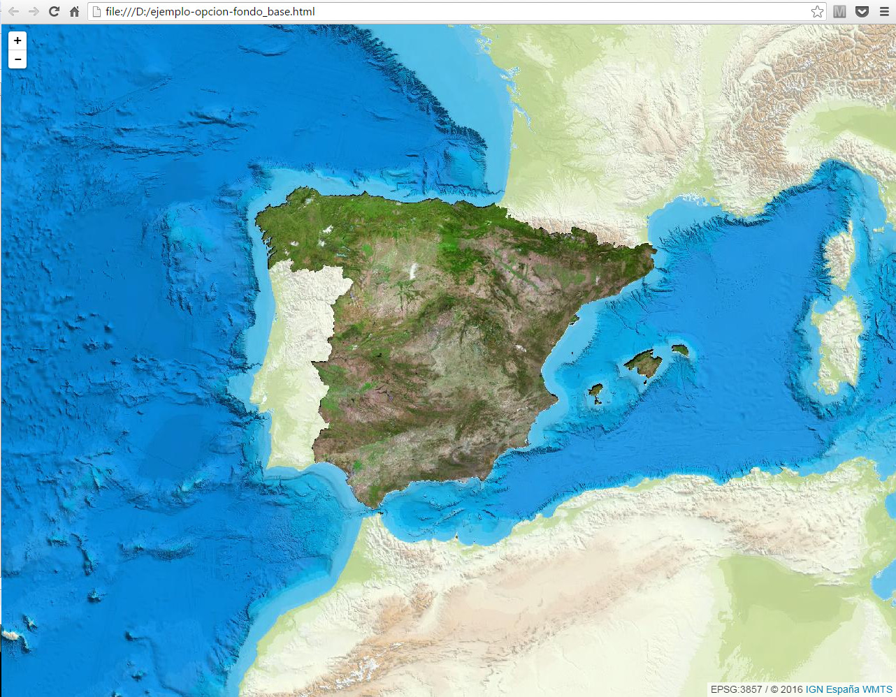

fondo_base
La opción fondo_base especifica el fondo cartográfico que se utilizará en el mapa, seleccionando una de entre las siguientes opciones disponibles:
| Nombre | fondo_base | Valor | Tipo | url |
|---|---|---|---|---|
| IDErioja - Mapa base | "iderioja-base" |
1 |
TS | https://rts.larioja.org/mapa-base/rioja/{z}/{x}/{y}.png |
| IDErioja - Ortofografía aérea | "iderioja-ortofoto" |
2 |
TS | https://rts.larioja.org/ortofoto-2017/{z}/{x}/{y}.jpg |
| IDErioja - Relieve | "iderioja-relieve" |
4 |
TS | https://rts.larioja.org/relieve-2016/{z}/{x}/{y}.jpg |
| IDErioja - Claro | "iderioja-claro" |
5 |
TS | https://rts.larioja.org/mapa-base/rioja_claro/{z}/{x}/{y}.png |
| IDErioja - Oscuro | "iderioja-oscuro" |
6 |
TS | https://rts.larioja.org/mapa-base/rioja_oscuro/{z}/{x}/{y}.png |
| IGN Mapa Base | "ign-base" |
100 |
WMTS | http://www.ign.es/wmts/ign-base (Layer=IGNBaseTodo) |
| PNOA (SCN) - Ortofotografía aérea | "pnoa-ortofoto" |
101 |
WMTS | http://www.ign.es/wmts/pnoa-ma (layer=OI.Orthoimage) |
| OpenStreetMap Standard | "osm-standard" |
700 |
TS | https://{s}.tile.openstreetmap.org/{z}/{x}/{y}.png |
| Carto - Light_all | "carto-light_all" |
800 |
TS | https://cartodb-basemaps-{s}.global.ssl.fastly.net/light_all/{z}/{x}/{y}.png |
| Carto - Dark_all | "carto-dark_all" |
801 |
TS | https://cartodb-basemaps-{s}.global.ssl.fastly.net/dark_all/{z}/{x}/{y}.png |
| {Sin fondo} | "blanco" |
999 |
La opción se puede configurar especificando su etiqueta de texto o su correspondiente valor numérico, siendo ambas opciones equivalentes.
La API js IDErioja puede representar fondos cartográficos servidos mediante tecnología TileServer con configuraciones (TileMatrix) del tipo TS utilizada por Google, y la especificación TMS Tile Map Service de OSGEO.
También se soportan fondos cartográficos provenientes de servicios WMTS Web Map Tile Service.
Si no se especifica nada, el valor que se utilizará por defecto es: "iderioja-base".
Una de las ventajas que ofrece utilizar directamente los fondos cartográficos ofertados, es la relativa a la obligación de expresar el "reconocimiento" del proveedor del servicio (attribution), ya que dicha información se refleja de forma automática en el mapa.
Notas:
(1) Aunque para la configuración de la variable fondo_base se tratan de la misma forma los fondos cartográficos TS/TMS y WMTS, los métodos que emplea internamente la API para su configuración y que el usuario podría utilizar, son muy diferentes, por lo que este aspecto deberá ser tenido en cuenta en el caso de abordar una configuración personalizada.
(2) El uso de los fondos cartográficos que se ofertan, están sujetos a las condiciones de uso que fija cada proveedor, por lo que será obligación y responsabilidad del usuario comprobar que la utilización que hace de los mismos se atiene a las condiciones establecidas por este.
Código de ejemplo
El siguiente ejemplo inicializa el mapa con el fondo cartográfico de la Ortofotografía aérea PNOA del Sistema Cartográfico Nacional, ofertada por el Instituto Geográfico Nacional (España) a través de un servicio WMTS.
<!DOCTYPE html>
<html>
<head lang="es">
<meta charset="UTF-8">
<meta name="viewport" content="width=device-width, initial-scale=1.0, maximum-scale=1.0, user-scalable=no" />
<title>Ejemplo de configuración fondo_base</title>
<style>
body, html{
height: 100%;
border: 0;
padding: 0;
margin: 0;
}
#map{
width: 100%;
height: 100%;
}
</style>
</head>
<body>
<div id="map"></div>
</body>
<script>
var iderioja_config = {
"fondo_base": "pnoa-ortofoto"
}
</script>
<script src="https://apigeo.larioja.org/v1/iderioja.js"></script>
</html>
En este caso el valor de la variable "fondo_base": "pnoa-ortofoto" se podría sustituir por "fondo_base": 101
Salida gráfica
Ejemplo de uso de la opción fondo_base=pnoa-ortofoto. (visualizar ejemplo) 